Week 8 Analysis of Variance I: the One-way ANOVA
In this week’s class we covered ANOVA. A major emphasis in the lecture was that ANOVA (much like many of the other tests that we cover in this course) is an extension of the general linear model. In many respects, ANOVA and regression are conceptually identical—whereas in linear regression our predictor variables are typically continuous (or, in some cases ordinal) we usually reserve ANOVA for instances when our predictors are discrete or nominal. This would be the difference say in predicting weight as a function of height (linear regression) in contrast to weight as function of hometown (Dayton, Youngstown, Cleveland, Cincinnati). Given that both the Howell (Chapter 11) and Field (Chapter 10) do a wonderful job of explaining the underlying principles of ANOVA, I won’t spend too much time here rehashing what is already available there. Field, especially does an excellent job of demonstrating how even though regression and ANOVA are often treated differently in terms of research focus (e.g., observation v. experimentation) and data focus (correlation/goodness of fit v. comparing means) they are indeed one and the same. Here, my goal is to reinforce this idea using examples in R, as well as providing a practical tutorial that will serve as our entry point into ANOVA. As always, for an example of how to perform these analyses in SPSS please check the appropriate course materials on Box Drive.
8.1 Required packages
This write-up assumes that you have the following packages installed and loaded in R:
# check to make your computer has pacman installed, if not install
if (!require(pacman)) {
install.packages("pacman")
}
# use pacman to check, install, and load necessary packages
pacman::p_load(car, cowplot, tidyverse, psych)8.2 ANOVAs for comparing means
We typically understand ANOVA as a method for allowing us to compare means from more than two samples. Two see how this connects with what we have learned from regression lets use the data provided in Howell’s main example from Chapter 11.1 (see book for background info).
8.3 Pre-processing the data:
To start, lets download Eysenck’s (1974) dataset:
dataset <- read_delim("https://www.uvm.edu/~dhowell/methods8/DataFiles/Ex11-1.dat",
delim = "\t")## Parsed with column specification:
## cols(
## GROUP = col_integer(),
## RECALL = col_integer()
## )show(dataset)## # A tibble: 50 x 2
## GROUP RECALL
## <int> <int>
## 1 1 9
## 2 1 8
## 3 1 6
## 4 1 8
## 5 1 10
## 6 1 4
## 7 1 6
## 8 1 5
## 9 1 7
## 10 1 7
## # ... with 40 more rows8.3.1 Recoding the factors (if dummy coded)
As we can see right off the bat the data is number (dummy) coded, where 1 = ‘Counting’, 2 = ‘Rhyming’, 3 = ‘Adjective’, 4 = ‘Imagery’ and 5 = ‘Intentional’. My advice for what to do if you get dummy coded data is to create a corresponding column in your data set that contains the factors in nominal (name) format.
Recall from last week that we can use the recode() function to reassign the dummy variables. In that case we recoded for the purpose of plotting. Here, we are recoding the levels of a factor. Here, the preferred function is an extension of recode(): recode_factor(). When we recode_factor() we have the added benefit of automatically factorizing, telling R to treat the IV as a factor. Let’s create a new column dataset$GROUP_FACTOR that contains this data:
# assigning the appropriate names for the dummy codes
dataset$GROUP_FACTOR <- dplyr::recode_factor(dataset$GROUP, `1` = "Counting", `2` = "Rhyming",
`3` = "Adjective", `4` = "Imagery", `5` = "Intentional")8.3.2 Renaming column headers
(optional) And now, just to be clear, let’s rename the original GROUP to GROUP_NUM. This can be accomplished by using the names() function. Heres the logic:
names() gives you the column names of your data frame:
names(dataset)## [1] "GROUP" "RECALL" "GROUP_FACTOR"You can isolate any individual name using indexing:
names(dataset)[1]## [1] "GROUP"And after you’ve isolated a column you can re-assign a new name:
names(dataset)[1] <- "GROUP_NUM"Check out this link for info on how to rename multiple columns at once using names() or dplyr::rename() from the tidyverse.
8.3.3 Reordering your levels
One important consideration that you should have even before you look at your data is what is your control (group, condition). Proper experimentation requires a proper control in order to properly isolate the influence of the manipulation. Here the best candidates for our control group might either be “Counting” or “Intentional”, depending on how the original problem was approached. If the larger comparison involved “Intentional v. incidental” learning for recall, then the “Intentional” group serves best as your control. If the original question involved levels of processing, then “Counting”" (theoretically the lowest level of incidental processing) is best. Here I am assuming the latter (although I believe theoretically Eysenck originally was interested in the former).
I bring this up, as its typically best to ensure that your control is entered first into the ANOVA model. To check the order of your levels, you may simply:
levels(dataset$GROUP_FACTOR)## [1] "Counting" "Rhyming" "Adjective" "Imagery" "Intentional"Here we see that “Counting” is first and will therefore be entered first into the model.
Assuming that we wanted to reorder the sequence, say to have Intentional as the control, then we might simply:
dataset$GROUP_FACTOR <- factor(dataset$GROUP_FACTOR, levels = c("Intentional", "Counting",
"Rhyming", "Adjective", "Imagery"))
levels(dataset$GROUP_FACTOR)## [1] "Intentional" "Counting" "Rhyming" "Adjective" "Imagery"However, I liked the original order, so let’s change it back:
dataset$GROUP_FACTOR <- factor(dataset$GROUP_FACTOR, levels = c("Counting", "Rhyming",
"Adjective", "Imagery", "Intentional"))
levels(dataset$GROUP_FACTOR)## [1] "Counting" "Rhyming" "Adjective" "Imagery" "Intentional"That’s better. Why the order is important will be made clear later in this write up. For now, think back to our example of running a t-test using lm(). You may recall that the group level that was first entered into the model served as the model intecept where the second group level was expressed in terms of the slope of the line (beta). A similar account will be happening here.
Finally, the data here is presenting in LONG format. This is the desired format for most analysis and plotting in R. Check last week’s write-up for a discussion on WIDE and LONG format and how to switch from WIDE to LONG.
8.4 Assumptions for ANOVA
8.4.1 Checking the normality assumption, OPTION 1
To check the distribution of outcomes in ANOVA, you have two options. The first would be to check the distribution of outcomes for EACH group/condition independently. In the case of the example dataset we could get info related to the skew and kurtosis of RECALL for each GROUP_FACTOR using `describeBy():
psych::describeBy(dataset, group = "GROUP_FACTOR")##
## Descriptive statistics by group
## GROUP_FACTOR: Counting
## vars n mean sd median trimmed mad min max range skew
## GROUP_NUM 1 10 1 0.00 1 1 0.00 1 1 0 NaN
## RECALL 2 10 7 1.83 7 7 1.48 4 10 6 0
## GROUP_FACTOR* 3 10 1 0.00 1 1 0.00 1 1 0 NaN
## kurtosis se
## GROUP_NUM NaN 0.00
## RECALL -1.22 0.58
## GROUP_FACTOR* NaN 0.00
## --------------------------------------------------------
## GROUP_FACTOR: Rhyming
## vars n mean sd median trimmed mad min max range skew
## GROUP_NUM 1 10 2.0 0.00 2.0 2.00 0.00 2 2 0 NaN
## RECALL 2 10 6.9 2.13 6.5 6.88 0.74 3 11 8 0.18
## GROUP_FACTOR* 3 10 2.0 0.00 2.0 2.00 0.00 2 2 0 NaN
## kurtosis se
## GROUP_NUM NaN 0.00
## RECALL -0.4 0.67
## GROUP_FACTOR* NaN 0.00
## --------------------------------------------------------
## GROUP_FACTOR: Adjective
## vars n mean sd median trimmed mad min max range skew
## GROUP_NUM 1 10 3 0.00 3 3.00 0.00 3 3 0 NaN
## RECALL 2 10 11 2.49 11 11.25 2.97 6 14 8 -0.66
## GROUP_FACTOR* 3 10 3 0.00 3 3.00 0.00 3 3 0 NaN
## kurtosis se
## GROUP_NUM NaN 0.00
## RECALL -0.84 0.79
## GROUP_FACTOR* NaN 0.00
## --------------------------------------------------------
## GROUP_FACTOR: Imagery
## vars n mean sd median trimmed mad min max range skew
## GROUP_NUM 1 10 4.0 0.0 4.0 4.00 0.00 4 4 0 NaN
## RECALL 2 10 13.4 4.5 11.5 12.75 1.48 9 23 14 0.99
## GROUP_FACTOR* 3 10 4.0 0.0 4.0 4.00 0.00 4 4 0 NaN
## kurtosis se
## GROUP_NUM NaN 0.00
## RECALL -0.53 1.42
## GROUP_FACTOR* NaN 0.00
## --------------------------------------------------------
## GROUP_FACTOR: Intentional
## vars n mean sd median trimmed mad min max range skew
## GROUP_NUM 1 10 5 0.00 5 5 0.00 5 5 0 NaN
## RECALL 2 10 12 3.74 11 12 2.97 5 19 14 0.05
## GROUP_FACTOR* 3 10 5 0.00 5 5 0.00 5 5 0 NaN
## kurtosis se
## GROUP_NUM NaN 0.00
## RECALL -0.47 1.18
## GROUP_FACTOR* NaN 0.00If we wanted to perform for extensive methods like hist(), qqPlot(), and shapiro.test(), in the past I had you filter be each level (group) and proceed. So for example for Counting:
countingGroup <- filter(dataset, GROUP_FACTOR == "Counting")
hist(countingGroup$RECALL)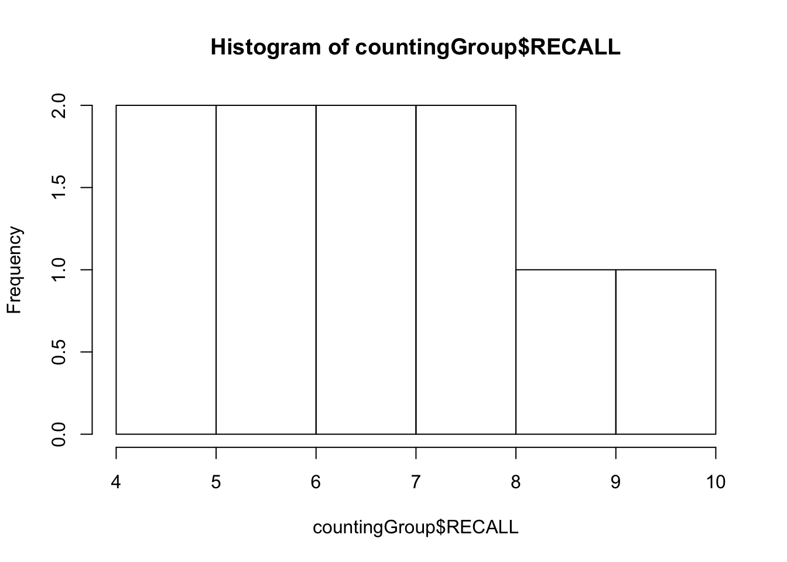
qqPlot(countingGroup$RECALL)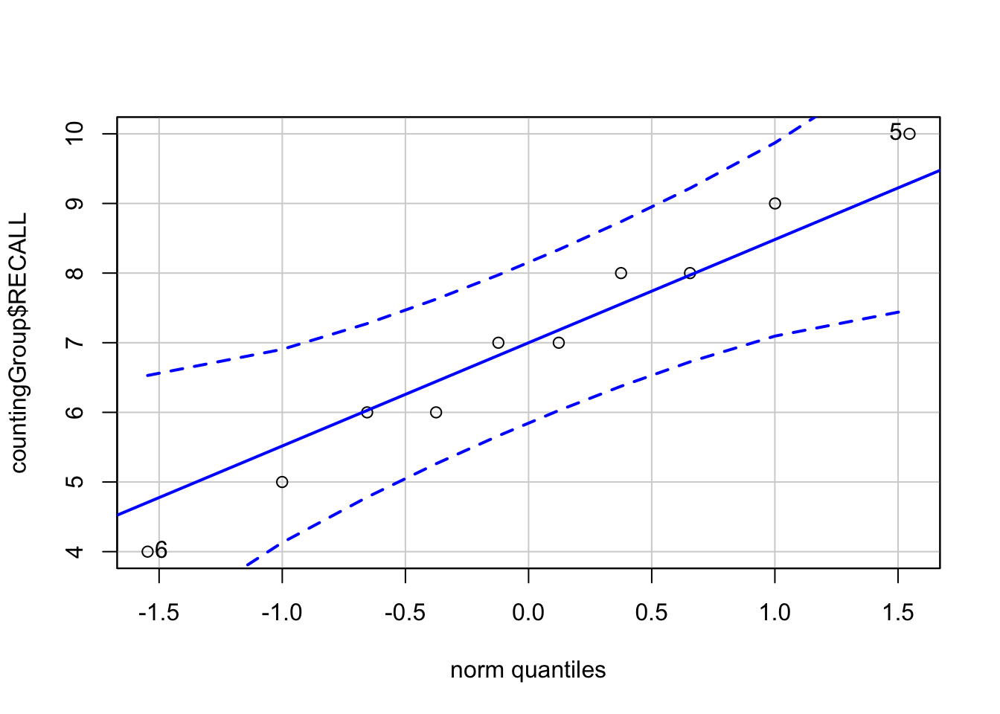
## [1] 6 5shapiro.test(countingGroup$RECALL)##
## Shapiro-Wilk normality test
##
## data: countingGroup$RECALL
## W = 0.98372, p-value = 0.9819In the past you would have to repeat this for each other level. An alterative to generate an output by each level of a factor is to use the by() function. For example to generate a sequence of qqPlots (for the sake of space I’m not going to execute this code here, but try at home)
# by(dependent variable, grouping factor, name of function)
by(dataset$RECALL, INDICES = dataset$GROUP_FACTOR, qqPlot)You can do the same with hist() and shapiro.test().
8.4.2 Checking the normality assumption, OPTION 2
Although by() may or may not make life easier for you in this test case, things rapidly become more complicated when attempting to check normality by condition. For example if you’re running a 2×3×3 mixed effect ANOVA, you would need to run through 18 conditions. So what to do. A simpler alternative is to run you model and analyze your residuals. This web link does a nice and quick job of explaining the logic.
In this case we would run our ANOVA model using aov:
dataset_aov <- aov(RECALL ~ GROUP_FACTOR, data = dataset)Congrats, you’ve just run an ANOVA, but for now we aren’t interested in the results from the model. Remember from a view weeks back that many outputs have attributes that may be accessed. For example:
attributes(dataset_aov)## $names
## [1] "coefficients" "residuals" "effects" "rank"
## [5] "fitted.values" "assign" "qr" "df.residual"
## [9] "contrasts" "xlevels" "call" "terms"
## [13] "model"
##
## $class
## [1] "aov" "lm"We want those residuals!! From here, we can simply take the residuals and submit them to our standard tests for normality:
psych::describe(dataset_aov$residuals)## vars n mean sd median trimmed mad min max range skew kurtosis se
## X1 1 50 0 2.98 -0.45 -0.14 2.59 -7 9.6 16.6 0.64 1.22 0.42hist(dataset_aov$residuals)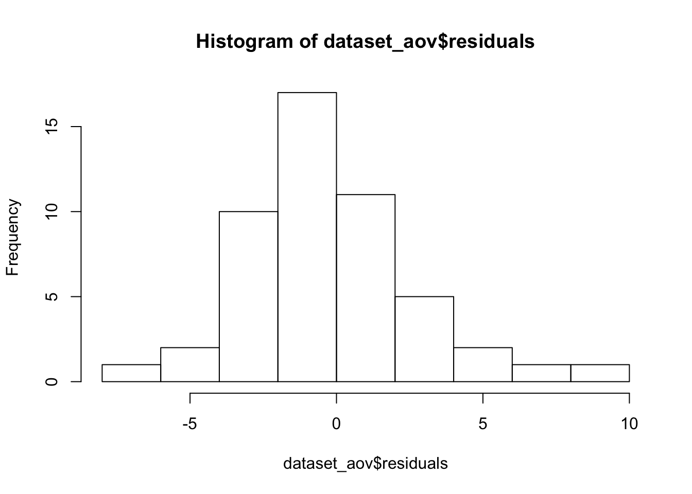
qqPlot(dataset_aov$residuals)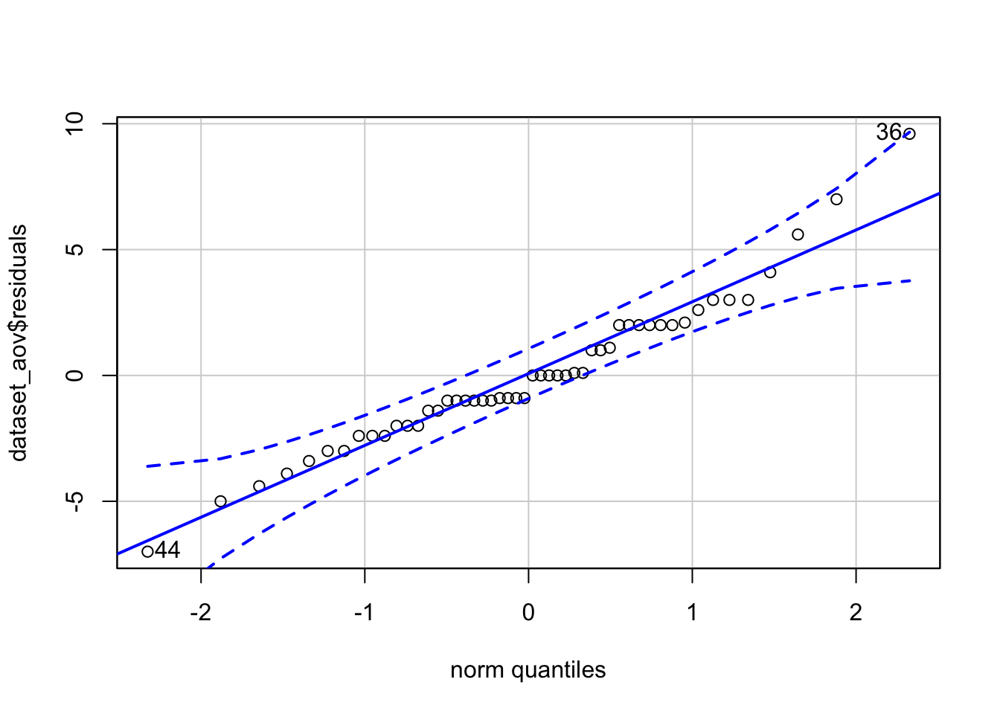
## [1] 36 44shapiro.test(dataset_aov$residuals)##
## Shapiro-Wilk normality test
##
## data: dataset_aov$residuals
## W = 0.95964, p-value = 0.08586So, between OPTION 1 and OPTION 2, I’d recommend typically going with OPTION 2.
8.4.3 Homogeneity of Variance
Another assumption of ANOVA is the homogeneity of variance between groups. An easy-way to get an eyeball test of this assumption is two perform a box plot of the data. Here I am performing this plot using ggplot2:
boxplots <- ggplot(data = dataset, aes(x = GROUP_FACTOR, y = RECALL)) + geom_boxplot()
show(boxplots)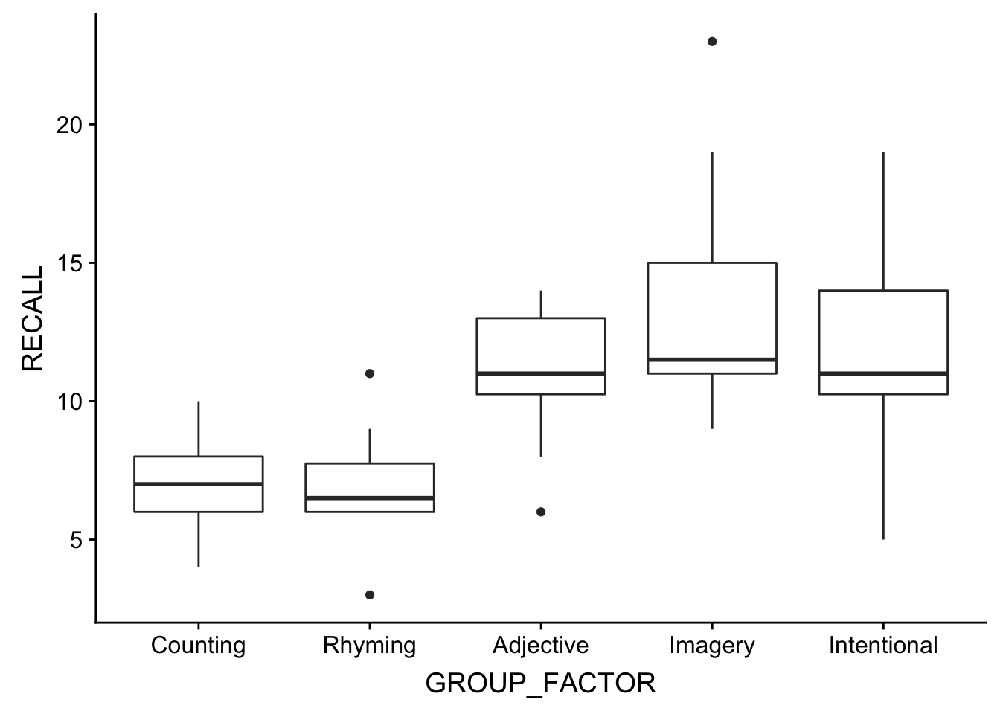
Huge differences in the IQR regions may be a clue that the homogeneity assumption is violated. We can run more specific tests in R including the Levene Test and Figner-Killeen (non-parametric, to be used if the data is not normal) Test of Homogeneity of Variances. As is typically the case \(p<.05\) indicates a violation of this assumption:
# Levene Test of Homogeneity of Variances
car::leveneTest(RECALL ~ GROUP_FACTOR, data = dataset)## Levene's Test for Homogeneity of Variance (center = median)
## Df F value Pr(>F)
## group 4 0.8932 0.4759
## 45# Figner-Killeen Test of Homogeneity of Variances
fligner.test(RECALL ~ GROUP_FACTOR, data = dataset)##
## Fligner-Killeen test of homogeneity of variances
##
## data: RECALL by GROUP_FACTOR
## Fligner-Killeen:med chi-squared = 1.9733, df = 4, p-value = 0.74078.4.4 What to do if the assumptions are violated?
If either assumption is violated, one option that you have is to transform you data. We’ve talked several times in class about the pros and cons of doing this, and both the Field and Howell texts provide examples for how this is done. Another option is to use a non-parametric test such as the Kruskal-Wallis Test if the data is not normal, or Welch’s ANOVA is the variances are not homogenous. That said, one of reasons that ANOVA is so popular is that it has been demonstrated to be robust in the face of violated assumptions (as long as the sample sizes are equal). For example, in Design and Analysis of Experiments (1999, p. 112) Dean & Voss argue that the maximum group variance may be as high as 3× the minimum group variance without any issue. With this in mind, a question (gray area) before us is how much of a violation is there in the data? And if not so much, you may be fine just running an ANOVA regardless.
8.5 Running the ANOVA in R:
There a many, many ways to run an ANOVA in R. Throughout the semester we will be highlighting three: aov(), lm(), and using the afex package. For the next two weeks we will concentrate on aov() which is the standard method, as well as the lm() method that you have used before, just to reinforce that ANOVA and regression are one in the same. In fact, SPOILER ALERT, aov() is just a fancy wrapper for lm().
Like lm() from weeks past, aov() asks us to enter our dependent and independent variables into the model in the formula format DV ~ IVs. In this case, we only have a single IV, GROUP_FACTOR. Thus our model is:
aov.model <- aov(RECALL ~ GROUP_FACTOR, data = dataset)From here, an anova() of the model gives us our ANOVA table.
anova(aov.model)## Analysis of Variance Table
##
## Response: RECALL
## Df Sum Sq Mean Sq F value Pr(>F)
## GROUP_FACTOR 4 351.52 87.880 9.0848 1.815e-05 ***
## Residuals 45 435.30 9.673
## ---
## Signif. codes: 0 '***' 0.001 '**' 0.01 '*' 0.05 '.' 0.1 ' ' 1Also note that we can get residuals from the aov() output as well. In fact take a look at the object’s $class… see I told you, lm()!!!
attributes(aov.model)## $names
## [1] "coefficients" "residuals" "effects" "rank"
## [5] "fitted.values" "assign" "qr" "df.residual"
## [9] "contrasts" "xlevels" "call" "terms"
## [13] "model"
##
## $class
## [1] "aov" "lm"8.6 Reporting your data
First let’s grab the descriptive stats:
describeBy(dataset$RECALL, dataset$GROUP_FACTOR)##
## Descriptive statistics by group
## group: Counting
## vars n mean sd median trimmed mad min max range skew kurtosis se
## X1 1 10 7 1.83 7 7 1.48 4 10 6 0 -1.22 0.58
## --------------------------------------------------------
## group: Rhyming
## vars n mean sd median trimmed mad min max range skew kurtosis se
## X1 1 10 6.9 2.13 6.5 6.88 0.74 3 11 8 0.18 -0.4 0.67
## --------------------------------------------------------
## group: Adjective
## vars n mean sd median trimmed mad min max range skew kurtosis se
## X1 1 10 11 2.49 11 11.25 2.97 6 14 8 -0.66 -0.84 0.79
## --------------------------------------------------------
## group: Imagery
## vars n mean sd median trimmed mad min max range skew kurtosis se
## X1 1 10 13.4 4.5 11.5 12.75 1.48 9 23 14 0.99 -0.53 1.42
## --------------------------------------------------------
## group: Intentional
## vars n mean sd median trimmed mad min max range skew kurtosis se
## X1 1 10 12 3.74 11 12 2.97 5 19 14 0.05 -0.47 1.188.6.1 Reporting in the text
Reporting the omnibus ANOVA includes:
- the F value,
- the degress of freedom (between and within),
- the p-value
- effect size: typically with ANOVA we report partial eta squared, although note that Howell advocates for omega squared. Howell gives you the equations to calculate both; and indeed they can be calculated given the info that is conveyed in the
anova(aov)output. I won’t delve too much into the how to do that here, because, well… homework. But it should be included.
For our data our report takes the form: \(F(4,45)=9.085,p<.001, \eta_p^2=.45\).
As we typically focus on means with ANOVA, it is typically a good idea to report means and some report of of the distribution of each group (typically either standard deviation or standard error; although 95% CI may be useful in certain scenarios).
So for example reporting the Rhyming group:
- M ± SD: 6.90 ± 2.13
- SE: 6.90 ± 0.67
8.6.2 What the omnibus ANOVA tells you
While it may be useful to report the means, you need to be mindful of what the omnibus ANOVA tells you. Remember, that the the null hypothesis of the omnibus ANOVA is that “there are no differences between observed means”. Our significant result tells us that there are differences between our means, but does not tell us what those specific differences are. So while it may be useful to report general relationships, e.g., “Recall for people in the Intentional group tended to be greater than for the Counting group” you cannot say definitively “Recall was significantly greater for the Intentional Group”. Typically when you only have tested the omnibus ANOVA, you only speak in generalities (e.g., “Recall tended to increase with level of processing.”)
Always be mindful that you don’t over interpret your data.
8.6.3 Plots
For ANOVA plots, there are typically three acceptable plots used to convey, box plots, bar plots, and line plots. As the ANOVA become more complex, we tend towards using line plots (box plots and bar plots may become very busy in complex designs). Unless there are compelling reasons not to we tend to plot the means (although note that box plots usually give you medians). Since we have already produced a box plot above, I’ll show examples of bar and line plots.
To create a line plot with points at the means and error lines representing the 95% CI (known as a point range), we can use call that you are familar with and a new geom pointrange. Whats nice about point range is that it allows you to create your points and the error bars all in a single line.
p <- ggplot2::ggplot(data = dataset, mapping = aes(x = GROUP_FACTOR, y = RECALL))
# create the points
p <- p + stat_summary(fun.data = mean_cl_normal, size = 1, color = "black", geom = "pointrange")
show(p)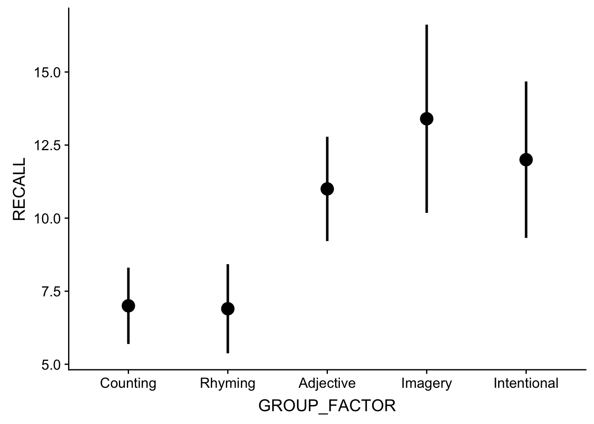
Now to add the lines to this plot. For this you will need another stat_summary() line specifying that the vertices of the lines should be the means, fun.y = mean and a parameter that specifies how the lines should be grouped. Since we have a One-way ANOVA, group=1. When we built to more complex designs you may elect to group=FACTOR_NAME. Something like this is useful to say make some lines dashed and some lines solid according to levels on a factor. More on this in two weeks when we get to factorial ANOVA.
While we’re at it let’s fix those axes titles. We can use the functions xlab() and ylab() to do so.
# this is from before:
p <- ggplot2::ggplot(data = dataset, mapping = aes(x = GROUP_FACTOR, y = RECALL))
p <- p + stat_summary(fun.data = mean_cl_normal, size = 1, color = "black", geom = "pointrange")
# and now adding the lines
p <- p + stat_summary(data = dataset, fun.y = mean, size = 1, color = "black", mapping = aes(group = 1),
geom = "line")
# and fixing the axis titles:
p <- p + xlab("Group") + ylab("Words recalled")
show(p)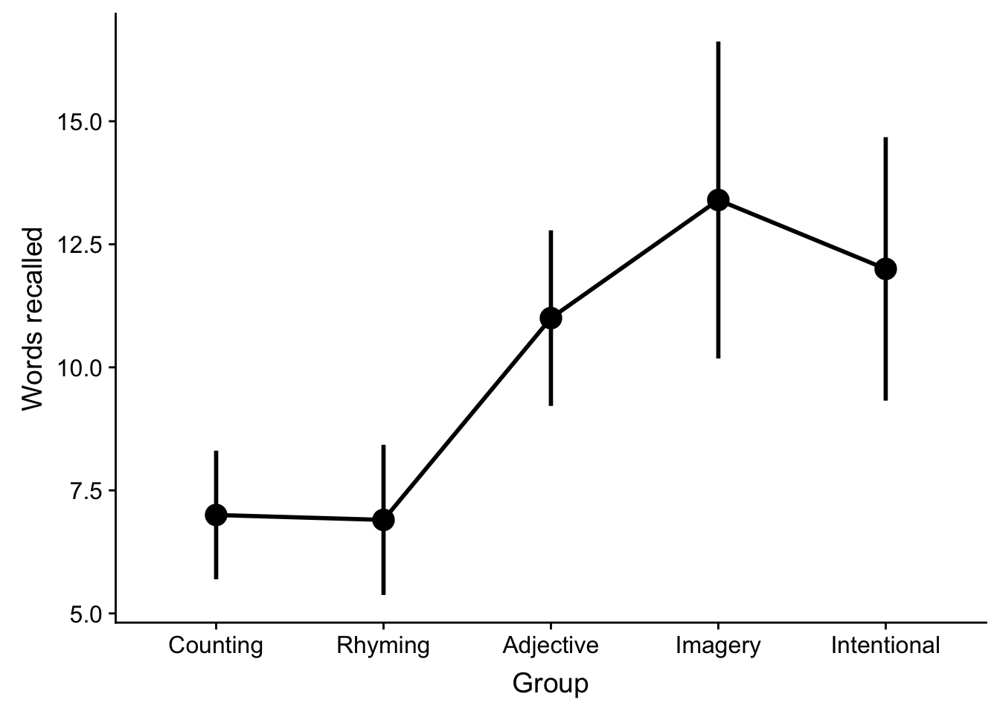
Finally, for aesthetic reasons yo may elect to expand the y-axis. For example to make the range of y-axis values (0,20):
p + expand_limits(y = c(0, 20))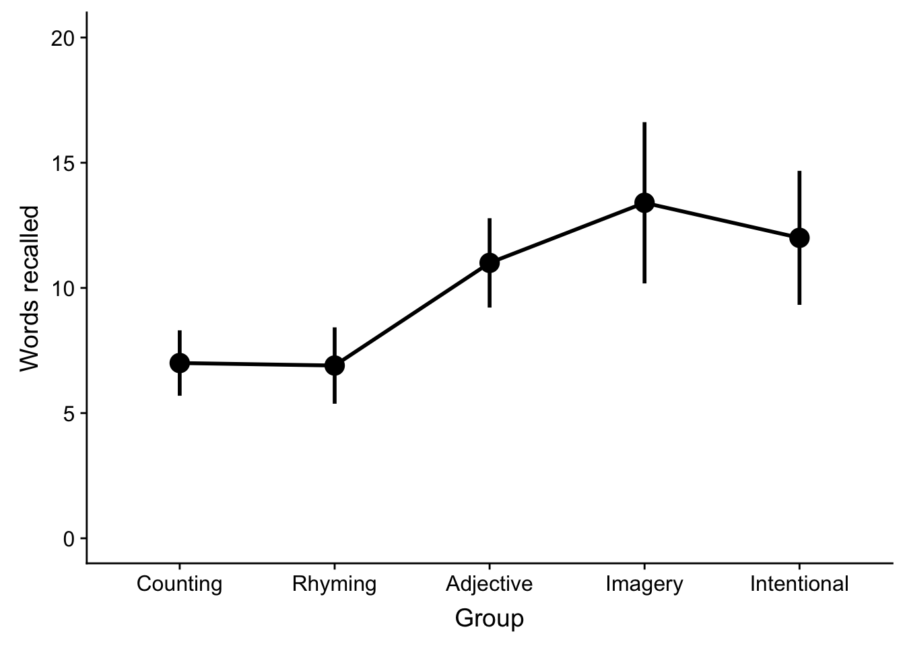
Now a bar plot, with standard error bars. This is similar to how you built your bar plots from last week (t-test)
p <- ggplot2::ggplot(data = dataset, mapping = aes(x = GROUP_FACTOR, y = RECALL))
p <- p + stat_summary(fun.y = mean, geom = "bar")
p <- p + stat_summary(fun.data = mean_se, geom = "errorbar", aes(width = 0.25))
p <- p + xlab("Group") + ylab("Words recalled")
show(p)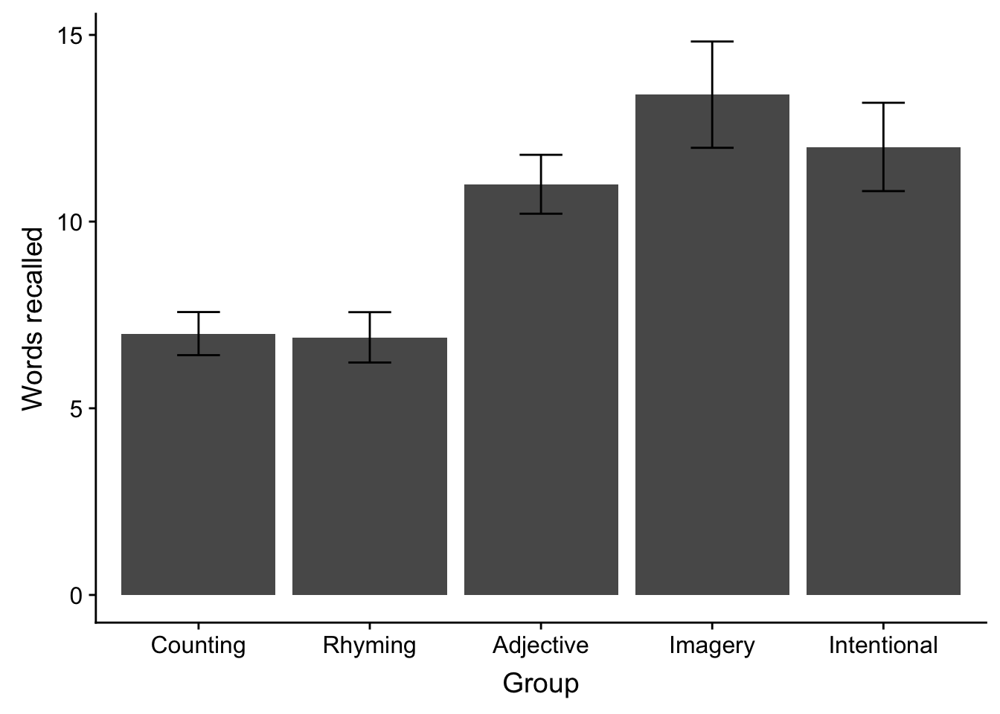
and fixing the gap below the zero:
# fixing gap below zero:
p <- p + scale_y_continuous(expand = c(0, 0)) + expand_limits(y = c(0, 17.5))
show(p)
Note that when you present a figure, (A) you need to refer to the figure in the text and (B) you need to provide a figure caption that gives adequate detail. The caption should go below the figure:
show(p)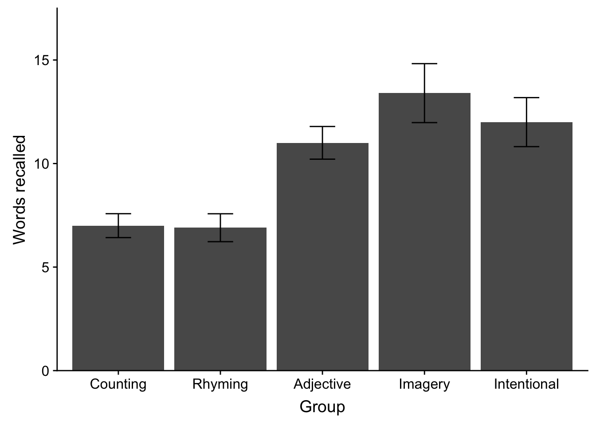
Figure 1. Mean words recalled as a function of learning group. Error bars represent standard error.
8.7 DIGGING DEEPER: ANOVA and Regression
Now that we’ve got practical matters out of the way, I want to take some time to dig a little deeper into the connections between ANOVA this week and our work on correlations and regressions in the past.
As we’ve already mentioned (and spent time discussing in class) ANOVA is just an extension of the simple linear model that we covered last week, where ANOVA is used when our predictors are discrete. In fact aov() is simply a wrapper for the lm() function that we used last week. For example, let’s run our model using lm() and then pipe it into anova()
lm.model <- lm(RECALL ~ GROUP_FACTOR, data = dataset)
anova(lm.model)## Analysis of Variance Table
##
## Response: RECALL
## Df Sum Sq Mean Sq F value Pr(>F)
## GROUP_FACTOR 4 351.52 87.880 9.0848 1.815e-05 ***
## Residuals 45 435.30 9.673
## ---
## Signif. codes: 0 '***' 0.001 '**' 0.01 '*' 0.05 '.' 0.1 ' ' 1All aov() does is take an lm object and produce an ANOVA table from the results. If we were simply to look at the lm() model we see that it gives us the info in our ANOVA table at the end of the summary, including the F-statistic (9.085), the degrees of freedom (4 and 45) and the p-value (1.815e-05):
lm(RECALL ~ GROUP_FACTOR, data = dataset) %>% summary()##
## Call:
## lm(formula = RECALL ~ GROUP_FACTOR, data = dataset)
##
## Residuals:
## Min 1Q Median 3Q Max
## -7.00 -1.85 -0.45 2.00 9.60
##
## Coefficients:
## Estimate Std. Error t value Pr(>|t|)
## (Intercept) 7.0000 0.9835 7.117 6.83e-09 ***
## GROUP_FACTORRhyming -0.1000 1.3909 -0.072 0.943004
## GROUP_FACTORAdjective 4.0000 1.3909 2.876 0.006138 **
## GROUP_FACTORImagery 6.4000 1.3909 4.601 3.43e-05 ***
## GROUP_FACTORIntentional 5.0000 1.3909 3.595 0.000802 ***
## ---
## Signif. codes: 0 '***' 0.001 '**' 0.01 '*' 0.05 '.' 0.1 ' ' 1
##
## Residual standard error: 3.11 on 45 degrees of freedom
## Multiple R-squared: 0.4468, Adjusted R-squared: 0.3976
## F-statistic: 9.085 on 4 and 45 DF, p-value: 1.815e-05Taking a look at this output, we see that the lm() model also gives us a lot of other additional useful info. For example the \(R^2\) of the model may be understood as the effect size of the ANOVA. However, when we report it for ANOVA we express it as… dun, dun, dunnnn… partial eta-squared!!, or \(\eta_p^2\).
Zooming in on the coefficients:
## Estimate Std. Error t value Pr(>|t|)
## (Intercept) 7.0 0.9835311 7.11721300 6.830993e-09
## GROUP_FACTORRhyming -0.1 1.3909230 -0.07189471 9.430043e-01
## GROUP_FACTORAdjective 4.0 1.3909230 2.87578833 6.137702e-03
## GROUP_FACTORImagery 6.4 1.3909230 4.60126133 3.425167e-05
## GROUP_FACTORIntentional 5.0 1.3909230 3.59473541 8.019114e-04We see information about the means of each group relative to the (Intercept). This is why I stressed earlier that it may be useful to rearrange the order of your levels such that R enters your control group into the model first. In this case, the first predictor entered is assigned to the (Intercept). The remaining predictors in the model are then presented relative to the first. Since we entered “Counting” first, the estimate of the (Intercept) represents its mean. The means for each remaining group are the sum of its estimate coefficient and the (Intercept). So for example the mean of the Rhyming group is \((-0.1)+(7.0)=6.9\).
The coefficients section also gives us one other useful bit of information, the t-values of the estimate. As we learned two weeks ago, for a simple regression the beta coefficient gives us information about the slope of the regression line and the corresponding t-value is a test of the null \(beta=0\). So for a simple regression this tells us if our slope is significantly different from 0.
A similar logic applies to the ANOVA model. As I mentioned above, deriving the means of each level of our IV is a matter of summing the (Intercept) and the beta estimate for that level. It should be apparent, then, that the beta estimates here represent the slope of a line that between the intercept and the mean of the level (where the distance between the predictor and coefficient is treated as a unit 1). Therefore, a significant t-value for beta tells us that the slope between the two means is significant, or that those two means are significantly different from one another. Keep in mind the only comparisons that are being made here are between the individual levels of our IV and the control (Intercept). So while this output allows us to make a claim about the difference between the means of the Counting (Intercept) group compared to each of the other groups, it does not allow us to make a claim about differences between our other level—for example no information about a statistical test of differences between the Rhyming and Imagery groups is conveyed here. However, assuming you are interested in deviations from your control, you can get info here quickly. There is a caveat here, in that our alpha criterion will need to be adjusted to be more conservative than .05. More on this next week.
8.7.1 Regression method v. means method
By now you may ask: “Well, if ANOVA is simply linear regression then why involve different functions?” You may even note (and be peeved about the fact) that the manner which we mathematically derived the F ratio used an entirely different equation than was used this week, even though the both equations yield the same result! Why?!?!?!?!?!
Sadly, tradition and convention are all I can tell you. While in both cases the F-value is an expression of amount of variance that your model (lm or aov) explains given total variance that exists in the data. In the ANOVA case we are concerned with the means of discrete groups or IVs. Since lm deals with continuous predictors (or IVs) then it makes little sense to talk about means, other than the grand mean. In both instances, however, the derived F is an expression of the model’s fit.
My goal for this section is to demonstrate to you that the regression method we used to derive the the F ratio last week is identical to the means method Howell introduced you to this week. First to recap the regression method, our equation from the correlation week’s lecture slides was:
\[F=\frac{r^2 / df_{reg}}{(1-r^2)/df_{res}}\]
- where \(r^2\) is the model’s coefficient of determination
- \(df_{reg}\): the model’s \(df\) (based on # of predictors), and
- \(df_{res}\): the model’s residual \(df\)
moreover,
\[r^2=\frac{SS_Y-SS_{res}}{SS_Y}\]
- where \(SS_Y\) is the sum of squared differences between the observed values \(Y\) and the grand mean \(\bar{Y}\)
- \(SS_{res}\) is the sum of squared differences between the observed values \(Y\) and the model-predicted values \(\hat{Y}\) (or distance to regression line).
8.7.2 Comparing two models
To conceptualize lets take another look at our data again. But first it may help to take a look at Section 2.6 on this site where I talk about means and better models. Go ahead… I’ll wait.
OK, now that you’re back let’s have another look at our example data. In the plot below, the dotted line represents the grand mean model, where we are using the mean of all data to predict individual scores. This corresponds to our assumption that all samples come from the same population and are ramdomly distributed (aka random error). Is from this means model that \(SS_Y\) is calculated.
p <- ggplot(data = dataset, mapping = aes(x = GROUP_NUM, y = RECALL)) + geom_point()
p <- p + geom_hline(yintercept = mean(dataset$RECALL), linetype = "dashed")
p <- p + geom_smooth(method = "lm", level = 0.95, se = FALSE)
# p <- p + stat_summary(fun.data = mean_se, size=1, color='red',
# geom='pointrange')
show(p)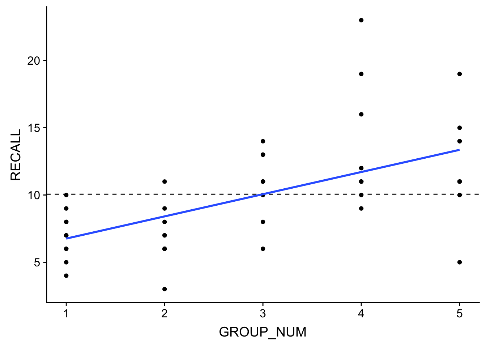
The solid line in this plot represents the line of best fit for our ANOVA model which, in addition to assuming random error, also assumes that GROUP (encoding) is a predictor of variation that we see in the data (aka systematic error). Its from this error which \(SS_{res}\) is calculated.
Thus \(r^2\) is simply a statment about the difference in the grand mean model and the experimental model (in this case our ANOVA model with GROUP predicotr) residuals as a percentage of \(SS_Y\).
In addition, with ANOVA we are dealing with discrete predictors rather than continuous. Visually, as you can see that the data in the plot are stacked into columns, with the mean of each group located at the center of the columns’ density. This also means that rather than a continuous range of predicted values \(\hat{Y}\) we have a set number of \(\hat{Y}\), one for each group mean that we are considering in the ANOVA. Therefore:
- \(SS_Y\) may be thought of in terms of the differences between every score compared to the grand mean.
- \(SS_{res}\) may be thought of as the differences between every score within the group and the group mean \(\hat{Y}\)
To put it more succinctly, with ANOVA we are directly comparing our GROUP predictor model’s ability to account for variance in the data above what we might expect by chance. Unpacking this a bit, we have a grand_mean model and a GROUP_mean model. Recall from our discussions in Chi-square that we can use a Likelihood Ratio Test to directly compare to models to see if the second accounts for significantly more variance than the first. In R this is accomplished using…. dun, dun, dun anova():
grand_mean_model <- lm(RECALL ~ 1, data = dataset) # Here, '1'' indicates let scores simply vary randomly
GROUP_mean_model <- lm(RECALL ~ 1 + GROUP_FACTOR, data = dataset) # add GROUP as a predictor to our original model
# run Likelihood Ratio Test to compare two models
anova(grand_mean_model, GROUP_mean_model, test = "LRT")## Analysis of Variance Table
##
## Model 1: RECALL ~ 1
## Model 2: RECALL ~ 1 + GROUP_FACTOR
## Res.Df RSS Df Sum of Sq Pr(>Chi)
## 1 49 786.82
## 2 45 435.30 4 351.52 2.464e-07 ***
## ---
## Signif. codes: 0 '***' 0.001 '**' 0.01 '*' 0.05 '.' 0.1 ' ' 1The output above tells you the structure (formula) of each model and that Model 2 accounts for significantly more variance than Model 1 (as assessed on the Chi-sq. distribution). For what it’s worth, let’s run this same comparision of models using a different test, F:
# run Likelihood Ratio Test to compare two models
anova(grand_mean_model, GROUP_mean_model, test = "F")## Analysis of Variance Table
##
## Model 1: RECALL ~ 1
## Model 2: RECALL ~ 1 + GROUP_FACTOR
## Res.Df RSS Df Sum of Sq F Pr(>F)
## 1 49 786.82
## 2 45 435.30 4 351.52 9.0848 1.815e-05 ***
## ---
## Signif. codes: 0 '***' 0.001 '**' 0.01 '*' 0.05 '.' 0.1 ' ' 1Those numbers look familar? What does that suggest is really going on with ANOVA?
8.7.3 Means method calculations
Now lets turn to our F-ratio equation from Howell (means method):
\[F=\frac{MS_{treat}}{MS_{error}}\]
where
- \(MS_{error}\) = \(SS_{res}/df_{res}\)
- and \(MS_{treat}\) = (\((SS_{Y}-SS_{res})/df_{reg}\);
note that \(df_{res}\) may be calculated as \(k(n-1)\) where \(k\) is the number of IV and \(n\) is the number of scores in each group; \(df_{reg}\) is \(k-1\).
so for our model, lm.model we can calucalte the F-ratio using the means method as follows:
SS_Y <- ((dataset$RECALL - mean(dataset$RECALL))^2) %>% sum()
SS_res <- (lm.model$residuals^2) %>% sum()
k <- 5 # predictors
n <- 10 # number in each group
df_res <- k * (n - 1)
df_reg <- k - 1
MS_error <- SS_res/df_res
MS_treat <- (SS_Y - SS_res)/df_reg
F.ratio <- (MS_treat/MS_error) %>% print()## [1] 9.0847698.7.4 Bringing it together: it’s all about the residuals, baby
So on one hand we have the F-ratio being calculated using \(r^2\) and on the other we have it being calculated using the mean square. Underlying both is a calculation of various \(SS\) and it is using this fact that we can show that the two methods are equivalent. Drawn out, we have:
\[F=\frac{r^2 / df_{reg}}{(1-r^2)/df_{res}} =\frac{MS_{treat}}{MS_{error}}\]
rewriting our \(r^2\) in terms of \(SS\) (sums of squares) we get:
\[\frac{\frac{SS_Y-SS_{res}}{SS_Y} / df_{reg}}{(1-\frac{SS_Y-SS_{res}}{SS_Y})/df_{res}} =\frac{MS_{treat}}{MS_{error}}\]
and rewriting our \(MS\) side of the equation in terms of \(SS\): \[\frac{\frac{SS_Y-SS_{res}}{SS_Y} / df_{reg}}{(1-\frac{SS_Y-SS_{res}}{SS_Y})/df_{res}} =\frac{(SS_{Y}-SS_{res})/df_{reg}}{SS_{res}/df_{res}}\]
multiplying the left side of the equation by 1, or \(\frac{SS_Y}{SS_Y}\):
\[\frac{(SS_Y-SS_{res}) / df_{reg}}{(SS_Y-(SS_Y-SS_{res}))/df_{res}} =\frac{(SS_{Y}-SS_{res})/df_{reg}}{SS_{res}/df_{res}}\]
which gives us:
\[\frac{(SS_{Y}-SS_{res})/df_{reg}}{SS_{res}/df_{res}}=\frac{(SS_{Y}-SS_{res})/df_{reg}}{SS_{res}/df_{res}}\] What does this mean for you… well perhaps nothing. Honestly, if you are using your computer for stats a correct calculation is a correct calculation. However, conceptually it may be easier to get and keep yourself in general linear model mode, as it will make incorporating more complex modeling techniques (higher-order ANOVA, ANCOVA, mixed-models, multi-level models, growth curve models) a more intuitive step in the future.